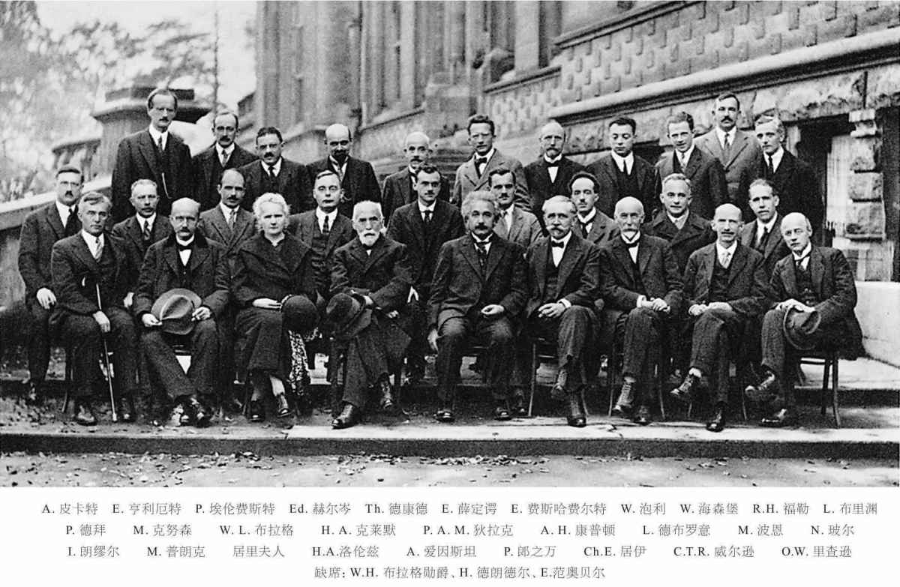
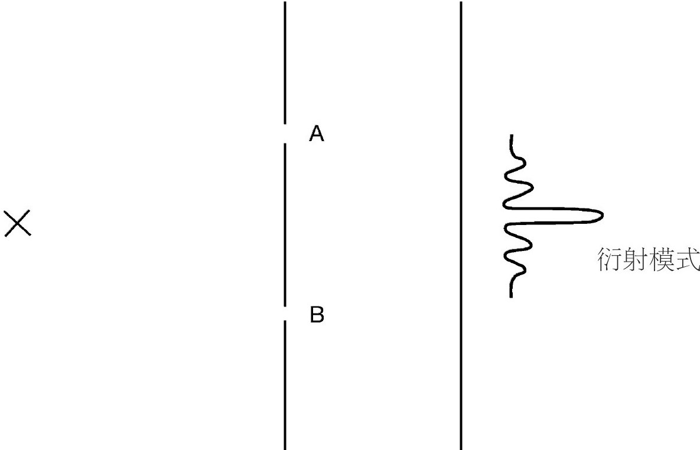
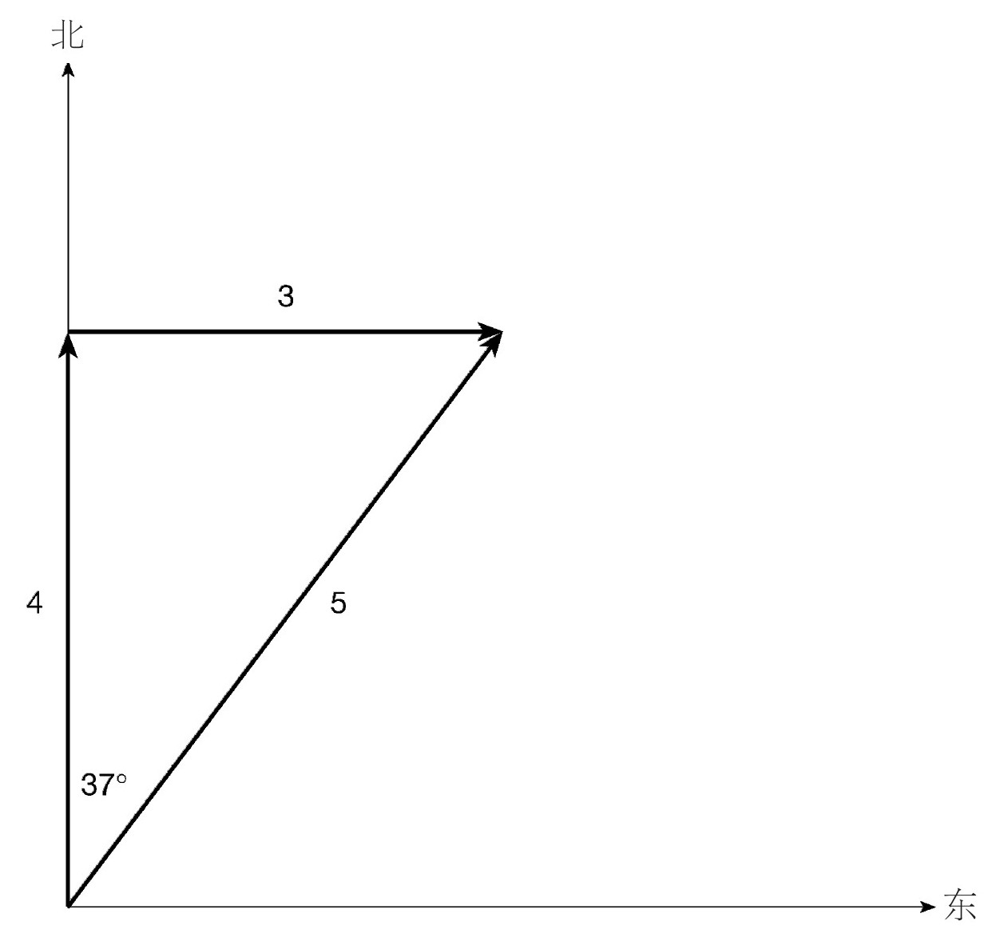
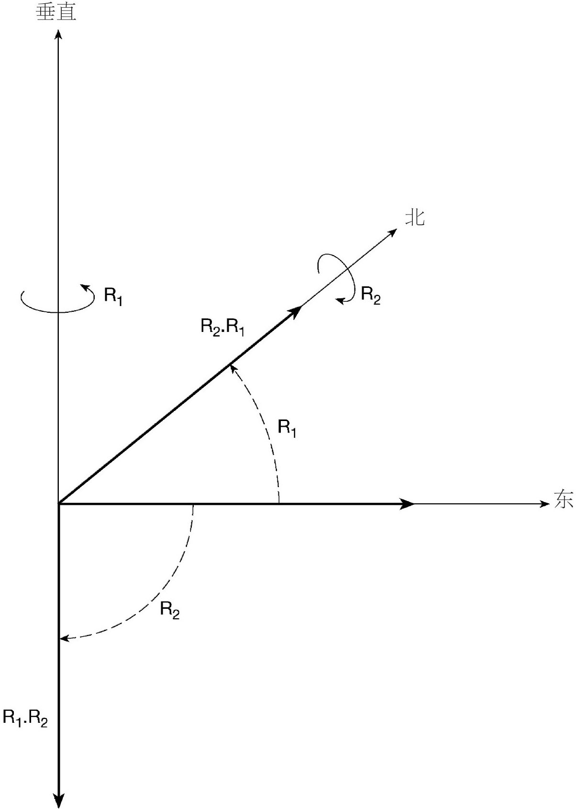

对于物理学界来说，马克斯·普朗克的先驱性工作之后的几年是一段困惑和黑暗的时期。光既是波，也是粒子。引人入胜的成功模型，如玻尔原子，给人以新的物理理论即将诞生的希望。但是，强加在经典物理破碎废墟上的这些量子补丁并不完美，这表明在一致协调的物理图景出现之前还需要更多的洞察力。当曙光最终降临的时候，一切就像热带的日出一样突然。
在1925到1926年间，现代量子理论已经变得非常成熟了。在理论物理学界人们的记忆里，这些奇迹之年仍然具有十分重要的意义，仍然能唤起人们的敬畏，尽管生活的记忆已不再造访那些英雄时代。当现代物理理论的基本面有所萌动的时候，人们可能会说：“我感觉1925年又重来一次。”这样的话语中有着依依不舍的意味。就像华兹华斯谈论法国大革命那样，“能活在那个黎明，已是幸福；若再加上年轻，更胜天堂！”其实，在上世纪最后的75年里，物理学界仍有很多重要的进展，但是尚未出现像量子理论诞生时那样物理原理的第二次彻底改变。
特别地，有两个人使量子革命得以开展，他们几乎同时产生了令人吃惊的新想法。

图2 量子理论之伟大与壮丽：1927年索尔维会议
其中一位是个年轻的德国理论学家，名叫维尔纳·海森堡。他一直在努力了解原子光谱的细节。光谱在现代物理学的发展中起着非常重要的作用。其中一个原因是，光谱线频率测量的实验技术能够做到精细入微，因此能够给出非常准确的实验结果，进而提出非常精确的问题，让理论学家去攻克。我们已经在氢原子光谱中看到了它的一个简单例子，即巴耳末公式和玻尔用他的原子模型给出的解释。自那以后，问题变得更加复杂了。总体来说，海森堡关注的是寻求一个对光谱性质更广泛和更有雄心的解决方案。当海森堡在北海黑尔戈兰岛上从一次严重的枯草热中恢复时，他完成了一个巨大的突破。计算看起来是相当复杂的，但是当数学的尘埃落定时，很明显可以看出，使用到的是被称为矩阵（按照特定方式乘在一起的数组）的数学对象的运算操作。因此，海森堡的发现被称为矩阵力学，其基本思想稍后将以更一般的形式呈现。目前，我们只需注意到矩阵和简单数字的区别在于，一般来说，矩阵不能相互交换。也就是说，如果A和B是两个矩阵，乘积AB和乘积BA通常是不相同的，乘法的顺序至关重要。这与数字不同，数字2乘3和3乘2得到的都是6。结果证明，矩阵的这种数学性质有着非常重要的物理意义，它和量子力学中什么物理量能够被同时测定密切相关。（更深入的数学推论请见数学附录4，它对量子理论的全面发展是必需的。）
在1925年，矩阵对于普通的理论物理学家来说是数学舶来品，就如同今天矩阵对于本书的非数学专业的普通读者来说一样。那个时代的物理学家比较熟悉的数学是关于波动的数学（包括偏微分方程）。这里用到的，就是麦克斯韦所提出的那类经典物理学中所用的标准技术。紧随海森堡的发现出现了一个看起来非常不同的量子理论版本，它以波动方程为基础，具有更加友好的数学表述。
量子理论的第二种表述被称为波动力学是非常恰当的。它的成熟版本是奥地利物理学家埃尔温·薛定谔发现的。但是，在稍早一点的时间，波动力学已经在正确的方向上迈出了一步，由年轻的法国贵族路易斯·德布罗意王子完成（数学附录5）。德布罗意提出一个大胆的建议：如果波动的光也可以表现出粒子的性质，人们也许可以相应地预期粒子——比如电子——同样能表现出波动性。通过扩大普朗克公式的应用，德布罗意能够用定量的形式描述这个想法。普朗克已经使能量的粒子性质与频率的波动性质成比例。德布罗意建议，另一个粒子性质——动量（一个重要的物理量，定义明确且大体上对应于粒子持续运动的能力），应该类似地与另一个波动性质——波长相关，相关比例系数还是普朗克的普适常数。这种等价性提供了一种微型词典，可以把粒子翻译成波，或者将波翻译成粒子。1924年，德布罗意在他的博士论文中展示了这些想法。巴黎大学当局非常怀疑这类异端观念，但是幸运的是，他们暗地里咨询了爱因斯坦。爱因斯坦认可了这位年轻人的才华，德布罗意也被授予博士学位。在短短几年之内，美国戴维逊和杰默以及英国乔治·汤姆森的实验都能够证明，一束电子与晶体晶格相互作用时存在电子干涉图样，从而证实了电子确实能够表现出波动行为。路易斯·德布罗意在1929年被授予诺贝尔物理学奖。（乔治·汤姆森是约瑟夫·汤姆森的儿子。人们经常说，父亲赢得诺贝尔奖是因为证实电子是一个粒子，而儿子赢得诺贝尔奖是因为证实电子是一种波。）
德布罗意提出的想法建立在对自由运动粒子性质的讨论之上。为了实现一个完整的动力学理论，需要做更深入的推广，以便允许在理论中加入相互作用。这是薛定谔成功解决的问题。早在1926年，他就发表了现在以他名字命名的著名方程（数学附录6）。引导他发现方程的方法是通过与光学进行类比。
虽然19世纪的物理学家认为光是由波组成的，但是他们并没有总是用成熟的波动计算技术去获知发生的情况。如果与定义问题的尺寸相比，光的波长较小，就有可能引入一个极其简单的方法。这个方法就是几何光学。几何光学把光视为按直线传播，并按照简单的规则进行反射和折射的射线。今天中学物理中基本的棱镜和平面镜系统的计算就是按照相同的方式在进行，计算者根本不需要担心复杂的波动方程。应用在光上的射线光学是比较简单的，类似于在质点力学中画轨迹。如果质点力学仅仅是更基础的波动力学的一个近似，薛定谔认为波动力学可以通过逆向思考来发现，类似于从波动光学导出几何光学。按照这个方法，他发现了薛定谔方程。
在海森堡向物理学界介绍他的矩阵力学理论后仅几个月，薛定谔就发表了他的想法。那时，薛定谔38岁。这提供了一个杰出的反例，否定了理论物理学家做出真正的原创工作是在25岁之前的断言——这个断言有时是科学家以外的人做出的。薛定谔方程是量子理论的基本动力学方程。它是偏微分方程中相当简单的一类，也是那时物理学家非常熟悉的一种，对这种方程物理学家已经拥有数学求解技术的强大积累。薛定谔方程用起来要比海森堡新奇的矩阵方法容易得多。人们立刻就可以开始工作，将这些想法应用到多种多样的具体物理问题上。对于氢原子光谱，薛定谔自己能够从他的方程推导出巴耳末公式。这个计算显示了玻尔在他对旧量子理论极富创造力的修补当中，距离真相究竟有多近，又有多远。（角动量是重要的，但其重要性并不体现在玻尔提出的方式中。）
很明显，海森堡和薛定谔已经取得了不俗的进展。然而乍一看，他们提出新思路的方式是如此不同，以至于看不清楚是他们做出了同样的发现、仅是表述不同，还是他们提出的原本就是两个竞争性的提议（见数学附录10的讨论）。重要的澄清工作随后很快出现，其中哥廷根大学的马克斯·玻恩和剑桥大学的保罗·狄拉克做出了非常重大的贡献。很快就确定有一个基于一般原理之上的理论，其数学描述可以表现为许多等价的形式。这些一般原理最终在狄拉克的《量子力学原理》一书中得到明确阐述。该书首次出版于1930年，是20世纪的一个智慧经典。其第一版的序言以看似简单的陈述开始：“在本世纪，理论物理学方法的发展经历了一次巨变。”我们现在必须考虑这次巨变带来的物理世界本质的变革。
可以这么说，我学习的量子力学是绝对可靠的。也就是说，我聆听了狄拉克在剑桥讲授的著名的量子理论课程，该课程持续了30年。听众不仅包括像我这样的大四本科生，还经常有资深的拜访者。这些拜访者理所当然地认为，从一个量子理论的杰出人物口中再听一遍他的课程是种特别的荣幸，虽然他们可能已经非常熟悉课程的大致内容。讲座几乎完全是按照狄拉克那本书的结构进行的。令人印象深刻的是，狄拉克完全没有强调他本人对这些伟大发现所做出的贡献。我已说过，狄拉克属于一类科学圣人，其内心纯净，目标明确。讲座令人如痴如醉，其清晰度和论点的磅礴展开，就如同巴赫赋格曲的发展一样令人舒心且看似必然。讲座没有使用任何形式的修辞手法，但是在讲座开始时，狄拉克允许自己做一些适当的舞台动作。
他拿起一支粉笔，折成两半，一段放在讲台的这一边，一段放在讲台的那一边。然后狄拉克说，从经典的角度看，一个状态是这支粉笔在“这儿”，一个状态是这支粉笔在“那儿”，而且这是仅有的两种可能性。然而，将粉笔换成电子，在量子世界中电子不仅有“这儿”和“那儿”的态，还有一大堆其他的态。这些态是两种可能性的混合体——一点“这儿”态和一点“那儿”态的叠加。量子理论允许态的混合叠加，但是在经典物理中态是彼此排斥的。正是这种有悖常理的几率叠加区分了量子世界和日常经典物理世界（数学附录7）。用专业术语来说，这个新的可能性被称为叠加原理 。
利用双缝实验，人们可以很好地阐述叠加假设带来的根本性结果。活力四射的诺贝尔物理学奖获得者理查德·费曼（他轶事风格的作品激起了公众的遐想），曾经将这个现象描述为躺在“量子力学的心脏”上。他认为，必须将量子力学整体吞下，而不必担心它的味道或者是否可以消化。这可以通过囫囵吞下双缝实验来体验一下：
经过这样一个预告，读者一定想去了解这个有趣的现象。该实验包含一个量子对象源，我们可以说是一支电子枪，它可以发射一束稳定的粒子流。这些粒子撞击一面接收屏，该屏有两道狭缝A和B。在狭缝屏的另一边，有一面探测屏，用以记录到达的电子。它可以是一块很大的感光板，每个入射电子都可以在上面留下标记。电子枪的电子发送速率已经调节过，确保在任一时刻仅有一个电子穿过仪器。然后，我们看看会发生什么。
电子一个接一个到达探测屏，每一个电子都出现一个对应的标记，记录了它的撞击点。这清楚显示单个电子表现出粒子行为。然而，当大量的标记积累在探测屏上时，我们发现这些标记产生的集体图案，能显示出我们所熟悉的干涉效应条纹。在双缝中间点对面的探测屏上，有一个致密的暗斑，其对应于沉积电子数目最多的位置。在此中心带的两侧都有交替出现的明带和逐渐缩小的暗带，分别对应于没有电子到达和有电子到达的位置。这种衍射图案（物理学家对这些干涉效应的称谓）是电子表现出波动行为的明确标志。
该现象是电子波粒二象性的一个简洁的例子。电子一个接着一个到达是粒子行为，产生的集体干涉图样是波动行为。但是，接下来要讲的东西更为有趣。我们可以探究得更深入一点，问问下面这个问题来看看到底发生了什么：当一个不可分的单个电子穿过仪器时，它是通过哪一道狭缝到达探测屏的？我们假定它通过上面的狭缝A。如果确实是这样，下面的狭缝B就是根本无关的，它也可以暂时被关闭。但是，如果只有狭缝A打开，电子并不是最有可能到达远端屏的中点，而是最可能到达与狭缝A对应的点。既然事实并非如此，我们得出结论：电子不可能是通过了狭缝A。通过类似讨论，我们也可以得出电子没有通过狭缝B的结论。那么，究竟发生了什么呢？伟大的夏洛克·福尔摩斯喜欢说的一句话是，当你已经摒弃了不可能，无论剩下的是什么，那一定是真相，不管它看起来是多么不可能。这条福尔摩斯原理可以引导我们得出结论：这个不可分的电子同时通过了双缝 。就经典直觉而言，这是一个荒谬的结论。然而，就量子理论的叠加原理而言，这是完全合情合理的。电子的运动状态是（通过狭缝A的）状态和（通过狭缝B的）状态的相加。

图3 双缝实验示意图
叠加原理暗含了量子理论两个非常普遍的特征。其一是，对于物理过程中所发生的情况已经不再可能形成清晰的图像。生活在（经典）日常世界中的我们，无法设想一个不可分粒子同时穿过双缝。另一个结果是，当我们进行观测时，已经不可能精确地预言将会发生什么。假如，我们来改造双缝实验，在双缝的每一道缝附近都放一个探测器，从而可以确定电子究竟通过哪道缝。事实证明，这个实验改造会带来两个结果。一是，电子有时被靠近狭缝A的探测器探测到，也有时被靠近狭缝B的探测器探测到。在任何一个特定时刻，根本不可能预言电子究竟在哪里可以被找到，但是经过一系列的试验，两道狭缝的相对几率会是一半对一半。这说明了一个普遍特征，即在量子理论中，对测量结果的预测是统计性质的，而不是决定性质的。量子理论经营的是可能性，而不是确定性。这个实验改造的另一结果是，破坏了终端探测屏上的干涉图样。电子不再倾向于到达探测屏的中点，到达狭缝A对面和到达狭缝B对面的那些电子是平均分布的。换句话说，发现什么样的电子行为取决于想要寻找什么样的性质。问一个粒子性问题（哪一道狭缝？），就得到一个粒子性的答案；问一个波动性问题（仅仅是关于探测屏上的最终累积图样），就会得到一个波动性答案。
首次清晰强调量子理论几率特征的是哥廷根的马克斯·玻恩。因为该成就，他将获得当之无愧的诺贝尔奖，不过一直要到1954年才授予。波动力学的到来已经提出了人们熟悉的问题：是什么的波？最初，人们倾向于猜测它可能是物质波的问题，因此就是电子本身以波动的方式在空间延展。玻恩很快认识到，这样的想法说不通，因为它不能容纳粒子性质。取而代之的应该是几率波，也就是薛定谔方程所描述的。这个进展并没有使所有先驱者都满意，因为许多人固守着经典物理的确定性本能。当量子力学展示出几率特征时，德布罗意和薛定谔两人都对量子物理大失所望。
几率解释暗示着，测量时刻必须是瞬间的、不连续改变的时刻。如果电子处于一个状态，它的几率分散到“这儿”“那儿”，又或者是“任何地方”，当测量它的位置并发现在此之际它在“这儿”时，电子的几率分布就会突然改变，变得仅仅集中在测量的确切位置“这儿”。既然几率分布是从波函数计算出来的，波函数也必须不连续地改变，这是薛定谔方程本身并没有揭示出的一个行为。这种突然改变的现象称为波包塌缩，是一个额外条件，必须从外部强加到理论上。在下一章，我们将看到，关于如何理解和解释量子理论，测量过程会继续引起很多困惑。对于某些人如薛定谔，这个问题激发的不仅仅是困惑。薛定谔对它满怀厌恶，他说，如果知道自己的想法将会引起这个“该死的量子跳跃”，宁愿当初没有发现他的方程！
（敬告读者：这一节包括一些简单的数学思想，非常值得下功夫去学习，但是需要用心才能消化。在本书正文中，这是仅有的一节冒险使用了一些数学知识。我很遗憾，对于非数学专业人士来说它难免有点难懂。）
经典物理描述的世界是清晰又确定的。量子物理描述的世界是模糊又不稳定的。就形式（即量子理论的数学表述）来说，我们已经看到这些性质源自量子叠加原理允许状态混合，而这与经典世界是严格不相容的。这个简单的违反直觉的可加性原理，利用叫作矢量空间的东西，找到了一个自然的数学表达形式（数学附录7）。
普通空间的一个矢量可以被想象为一个箭头，具有已知长度并指向已知方向。箭头能够被简单地一个接一个地加在一起。例如，正北方向的4英里与正东方向的3英里相加，可以得到北偏东37°方向的5英里（见图4）。数学家能够将这些思想推广到任意维度的空间。所有矢量拥有的基本性质就是它们可以加和。因此，它们给量子叠加原理提供了一个自然的数学对应。这里我们不需要关心细节，但是既然使用术语带来的便利总是好的，就值得谈到一种特别复杂的矢量空间形式——希尔伯特空间，它为量子理论提供了出色的数学工具。

图4 矢量相加
到目前为止，我们集中讨论了运动的状态。有人可能会认为，它们产生于给实验准备初始材料的具体方法，如从电子枪中发射电子、使光通过特定的光学系统、用一套特定的电场和磁场使粒子偏转，等等。对于已经准备好的系统，可以将状态看作“情况是什么样的”，尽管量子理论的不可图像化意味着情况不会像经典物理中那样清晰和直接。如果物理学家想知道一些更精确的情形（如电子到底在哪？），就必须进行观测，给系统引入一个实验干预。例如，实验者可能希望测量一些特定的动力学量，比如电子的位置或者动量。这样就会出现如下的正式问题：如果态是用矢量来表示的，那么被测量的观测量该如何表示？答案就在作用于希尔伯特空间的算符上。因此，连接数学形式与物理的方案，不仅包括矢量与态对应的规范，还包括算符与观测量对应的规范（数学附录8）。
算符的一般思想是它可以将一个态变换到另一个态。一个简单的例子就是旋转算符。在普通的三维空间中，沿着垂直方向旋转90°（沿右手螺旋方向旋转）的旋转算符将一个指向正东方的矢量（将其想象为一个箭头）转成一个指向正北方的矢量（箭头）。算符的一个重要性质是它们通常都相互不对易；也就是说，它们作用的次序是有意义的。考虑两个算符：R1 ——绕垂直轴旋转90°；R2 ——绕指向北方的水平轴旋转90°（还是右手螺旋）。按照先R1 后R2 的次序，旋转指向东方的箭头。R1 使箭头转成指向正北方的箭头，然后在R2 的作用下保持不变。我们将按这种次序作用的两个算符表示为R2 .R1 ，因为算符总是从右往左读，这有点像希伯来语和阿拉伯语。按照相反的次序应用这些算符，将首先使箭头从正东方转到正下方（算符R2 的结果），然后箭头也将保持不变（算符R1 的结果）。由于R2 .R1 作用的结果是指向正北方的箭头，而R1 .R2 作用的结果是指向正下方的箭头，所以这两者产生的结果是明显不同的。次序至关重要——旋转算符相互不对易。
数学家们后来认识到矩阵也可以看作算符，因此海森堡使用的非对易性矩阵是算符一般性质的另一个特例。
所有这些似乎相当抽象，但是非对易性被证明是一个重要物理性质的数学对应。为了看出这是如何发生的，必须先弄清观测量的算符形式如何关联到真实实验结果。算符是相当复杂的数学对象，但是测量结果总是被表达为简单的数字，比如2.7单位的任何可能的东西。抽象理论要使物理观测有意义，就必须有一个连接数（观测结果）和算符（数学形式）的方法。幸运的是，数学被证明胜任这个挑战。核心思想是本征矢量 和本征值 （数学附录8）。
有时候，一个算符作用在一个矢量上并不改变那个矢量的方向。例如，绕着垂直轴的旋转，完全不改变垂直方向的矢量。又如，沿垂直方向的拉伸操作，仅改变垂直矢量的长度，不改变它的方向。如果拉伸产生加倍效果，垂直矢量的长度将乘以2。用更一般的说法，我们说，如果算符O将一个特定的矢量v变成它自身的λ倍，那么v就是算符O的本征矢量，λ就是算符O的本征值。基本思想就是本征值（λ）提供了一个连接数与特定算符（O）和特定态（v）的数学方法。量子理论的一般原理包含一个大胆的要求，即本征矢量（也叫本征态）在物理上对应于某个态，而在该态上测量观测量O将必然产生结果λ。
这条规则能产生很多有意义的结果。其中一个就是它的逆命题：由于有大量的矢量不是本征矢量，因此将会有许多态，在其中测量O必然不会产生特定结果。（数学旁白：很容易看出，叠加两个属于O不同本征值的本征态，结果将不再是O的简单本征态。）因此，在后面这类状态中测量O，在不同的测量情况下一定会给出多种不同的答案。（这再次证明了我们所熟悉的量子理论的几率特征。）实际上，不论得到什么结果，随后产生的状态必须对应于本征态，也就是说，矢量必须立即转变为合适的O的本征矢量。这是波包塌缩的比较深奥的说法。

图5 非对易旋转
另一个重要结果涉及什么测量能够相互兼容，也就是说，可以同时测量。假定同时测量O1 和O2 是可能的，而且它们的结果分别是λ1和λ2。先按如下次序测量，即先将态矢量乘以λ1，然后再乘以λ2。然而，我们也可以颠倒测量顺序，即简单地将λ1和λ2的顺序交换一下再与态矢量相乘。既然两个λ是普通的数，它们这种次序颠倒就没什么关系。这意味着O2 .O1 和O1 .O2 作用在态矢量上有相同的效果，因此它们的次序无关紧要。换句话说，只有算符相互对易的观测量，同时测量才能相互兼容。反过来说，不相互对易的观测量不能同时进行测量。
这里，我们可以看到熟悉的量子理论的模糊性再次展现。在经典物理中，实验者能够在任何需要的时刻测量任何想要测量的东西。物理世界就展现在科学家能够洞察一切的眼睛之前。相比之下，在量子世界，物理学家的视野是部分被掩盖着的。在认识论上，我们了解量子对象知识的入口，要比经典物理料想的受到更多限制。
我们与矢量空间的数学接触就在这里结束了。任何感觉迷惑的读者只需简单地记住这样一个事实：在量子理论中，只有算符相互对易的观测量才能同时测量。
在1927年构造著名的不确定性原理的时候，海森堡非常清楚地说明了该原理的意义。他认识到，理论应该指定它允许人们通过测量来知道的东西。海森堡关心的不是我们刚才考虑的那类数学论点，而是利用理想化的“思想实验”去探索量子力学的物理内容。这些思想实验中的一个就是考虑所谓的γ射线显微镜。
这个想法是要找出，测量电子的位置和动量原则可以精确到何种程度。根据量子力学规则，相应的算符并不对易。因此，如果这个理论确实是正确的，将不可能知道任意精度的位置和动量值。海森堡想从物理层面理解为什么会这样。首先，让我们尝试测量电子的位置。原则上，完成该测量的一个方法就是照射光到电子上，然后通过显微镜去看它在哪里。（记住这是思想 实验。）而光学仪器有一个极限分辨能力，这给精确定位目标施加了限制。任何人做定位的精度都不可能比得上所用光的波长。当然，可以通过使用更短波长的光来提高精度——这儿就引入γ射线了，它是非常高频（波长短）的辐射。然而，这个策略付出了一个代价，该代价源自辐射的粒子性质。为了使电子能够被看到，它必须偏转至少一个光子进入显微镜。普朗克公式表明，频率越高，光子携带的能量就越大。结果，减小波长将使电子在与光子碰撞时，其运动遭受越来越多无法控制的扰动。这就意味着，在位置测量之后，就越来越不知道电子的动量是多少。在增加位置测量精度和降低对动量了解的精度之间，不可避免地存在一个权衡。这就是不确定性原理的基础：不可能同时完美地了解位置和动量（数学附录9）。用更生动的语言来说就是，能知道电子在哪，就无法知道它在做什么；或者，能知道它在做什么，就不知道它在哪。在量子世界，经典物理学家认为是一知半解的东西就是我们能够做到的最好的东西。
一知半解是量子的特性。成对出现的观测量在认识论上是相互排斥的。日常生活中，就有这种行为的例子。比如在音乐方面，不可能既指定发出一个音符的精确时刻，又同时精确知道它的音调。这是因为确定音符的音调需要分析声音的频率，这就要求先听一段音符，只有让音符持续几个振荡之后才能做出精确估计。正是声音的波动性质施加了这种限制。如果从波动力学的视角讨论量子理论的测量问题，完全类似的思考会引导人们回到不确定性原理上。
在海森堡的发现背后有一个有趣的故事。那时，他在哥本哈根学院工作，领导是尼尔斯·玻尔。玻尔爱好长时间的讨论，年轻的海森堡就是一个他喜爱的交谈对象。实际上，过不了多长时间，玻尔无尽的沉思就使他的年轻同事心烦意乱了。因此，海森堡非常高兴，能抓住一个玻尔不在的机会，利用玻尔的滑雪假期来开展自己的工作，完成了他关于不确定性原理的论文。随后，在伟大的老人回来之前，海森堡就匆忙把论文拿去发表了。然而，玻尔回来后发现海森堡犯了一个错误。幸运的是，这个错误是可以改正的，而且这样做并不影响最终结果。这个小小的失误涉及对光学仪器分辨能力的错误理解。事有凑巧，海森堡以前对该问题就犯过错误。他在慕尼黑完成了他的博士研究工作，指导老师是旧量子理论的领军人物阿诺尔德·佐默费尔德。作为杰出的理论家，海森堡并没有在实验工作上花多少心思，但是这些实验工作也应该是他研究的一部分。佐默费尔德做实验的同事威廉·维恩已经注意到海森堡这个情况了。他对年轻人漫不经心的态度感到愤怒，并且决定在口语考试中让他吃点苦头。他要求海森堡导出光学仪器的分辨能力，准确地难倒了海森堡！在考试结束后，维恩宣布由于这个小疏忽，海森堡没有通过考试。当然（并且公正地），佐默费尔德在最高的层次上为他争取通过。最后，只能折中解决，这位未来诺贝尔奖获得者虽被授予博士学位，却是以最低水平获得的。
在量子理论中计算几率的方法是根据叫作几率振幅的东西进行的。在这里完整讨论它是不合适的，因为它对数学要求太高，但是读者应该知道其中所涉及的两个方面。首先，这些振幅是复数，也就是说它们不仅包括普通的数，还包括i，即-1的“虚”平方根。实际上，复数是量子理论体系特有的。这是因为它们提供了非常易于表示波的一个方面的方法，可以查阅第一章中讨论干涉现象的内容。我们看到，波的相位与两列波是相互同步还是相互异步（或者任何在这两者之间的可能性）有关。从数学上讲，复数为表述这些“相位关系”提供了一个自然而方便的方法。然而，理论上必须小心，要确保观测值（本征值）与任何包含i的项无关。这可以通过要求对应于观测量的算符满足一定条件来实现，数学家把该条件叫作“厄米”（数学附录8）。
我们至少需要了解的关于几率振幅的第二个方面是，作为我们正在讨论的理论的数学工具的一部分，人们发现它们的计算涉及态矢量和观测量算符的组合。因为正是这些“矩阵元”（对这种组合的称呼）带有最直接的物理意义，并且它们原来是由人们所说的态——观测量——态的“三明治”构成，所以物理的时间依赖既可以归因于态矢量的时间依赖，也可以归因于观测量的时间依赖。这个探讨后来提供了一个线索，它表明尽管海森堡和薛定谔理论表现明显不同，它们的确完全对应于同一个物理（数学附录10）。它们表面上的不同是因为，海森堡将所有时间依赖完全归因于算符上，而薛定谔则将所有时间依赖完全归因于态矢量上。
为了有意义，几率自身必须是正数。它们是根据几率振幅来计算得到的，所用的方法是一种平方运算（叫作“模平方”），对于复振幅来说，该运算结果总是正数。另外，还存在一个标度条件（叫作“归一化”），它确保当所有几率加在一起时，结果是1（确定无疑会发生！）。
随着这些精彩的发现慢慢显露在世人面前，哥本哈根一直是对正在发生的事情的评估和裁定中心。此时，尼尔斯·玻尔不再对技术发展亲自做出具体的贡献。然而，他仍对解释性问题深感兴趣。而且，由于他的正直和洞察力，正在撰写开拓性论文的少壮派都愿将他们的发现交给他评审。哥本哈根是哲人王的法院，量子力学新思想的智慧成果都交给它加以评审。
除了身为长者这个角色，玻尔还确实给新量子理论提出了富有洞察力的见解，体现形式就是他的互补性概念。量子理论提供了大量成对可选的思维模式。比如，过程存在两个可选的表象，它既可以建立在测量全部位置的基础上，也可以建立在测量全部动量的基础上；又如，以波动方式与以粒子方式来思考量子对象的二元性。玻尔强调，这些成对可选的思想方式应该被认为是严格等效的，并且在处理时没有任何矛盾，因为每一个都与另一个互补，而非互相矛盾。这又是因为，它们对应于不同且相互不兼容的实验安排，二者不能同时使用。或者设置一个波动实验（双缝），在此情况下询问的是一个波动性问题，会收到一个波动性答案（干涉图样）；或者设置一个粒子实验（探测电子通过哪道狭缝），在此情况下一个粒子性问题就会收到一个粒子性答案（双缝对面的两个受冲击区域）。
互补性显然是一个有益的想法，尽管它无法解决所有解释性问题，就如下一章显示的那样。随着玻尔渐渐变老，他对哲学问题的关心与日俱增。毫无疑问，他是一位伟大的物理学家，但是在我看来，他对这个后来的哲学副业明显缺少天分。他的思想广泛而模糊，随后有许多书在尝试分析它们，获得的结论就是玻尔持有各种互不相容的哲学立场。也许他对此并不吃惊，因为他喜欢说，在能够说清楚某物和存在深奥且值得说的某事之间存在互补性。当然，互补性与量子理论的关联（这里问题源自经验，并且我们拥有完整的理论框架使它清楚易懂），并没有使这个概念能轻易应用到其他学科。似乎量子理论互补性可以用来证明，任何迎合人们喜好的相互矛盾的两者都是正确的。当玻尔提出互补性可以揭示古老的与人性相关的决定论和自由意志问题时，人们可能认为他已经极其危险地接近上述状态了。我们将把进一步的哲学反思放在最后一章。
人们很有理由期望，量子理论能显著地改变我们对位置和动量等物理术语的概念。更令人惊讶的是，它还影响了我们如何思考那些小的逻辑词语——“与”和“或”。
经典逻辑就如亚里士多德和一般的英国人构想的那样，是建立在逻辑分配律基础之上的。如果我告诉你，比尔是红头发，并且他不是在家就是在酒馆，那么你会预期，要么找到一个在家的红头发比尔，要么找到一个在酒馆的红头发比尔。这似乎是一个相当无关紧要的结论，它在形式上依赖于亚里士多德的排中律：“在家”和“不在家”之间，没有任何中间项。20世纪30年代，人们开始认识到，在量子世界中事情变得不一样了。一个电子不仅可以“在这儿”和“不在这儿”，还可以在任意多数量的其他态上，这些态是“这儿”和“不在这儿”的叠加。这就形成了一个中间项，它是亚里士多德做梦也想不到的。结果，就存在一种特别的逻辑形式，叫作量子逻辑，它的细节部分由加勒特·伯克霍夫和约翰·冯·诺伊曼给出。有时它也叫作三值逻辑，因为除了“真”和“假”之外，它还支持或然的答案“可能”——该想法哲学家们早已漫不经心地独自思考过。